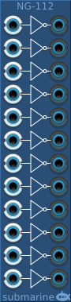

The NG-112 provides 12 NOT gates. It is designed to take digital signals, but it will happily accept analog signals.
The voltage range of the digital gates can be configured from the context menu. The device will output at the full range of the configured settings. The inputs will measure a logical high signal anywhere above the midpoint of the configured range.
Any input not connected will cause a high signal at the corresponding output. The NG-112 can be used with inputs disconnected to provide stable 1V, 5V or 10V signals.
By connected a single output to the input of another gate, it is possible to generate stable 0V, -5V and -10V signals.
The NG-106 provides six NOT gates in a small form factor. Otherwise functionality is as for the NG-112 above.
The NG-202 provides six polyphonic NOT gates in a small form factor.